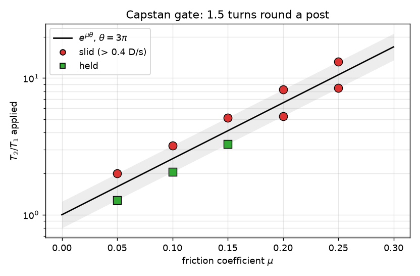

Which knots hold
A rope simulated segment by segment, tied into knots by pulling loose sketches tight, then loaded to see which knots grip and which feed their tails through. Every knot gets one number: the friction coefficient below which it fails.
The number
Each knot was tied from a hand-drawn topological sketch by pulling all its ends until it stopped compacting: at least five contacts, the points where the rope enters the knot steady, and the loaded ends still for half a second. Then the tails were let go, the standing parts were held at load, and the travel of each loaded standing end along its pull direction was measured for five seconds. If the knot grips, the ends stop; if the tails feed through, the ends keep going. A knot holds at a friction coefficient μ if the ends creep at less than 0.4 diameters per second over the last three seconds; it slips if they run six diameters, the knot comes apart, or the creep stays above that rate. Bisection on μ gives the critical value μ* below, with the bracket from the last two runs as its uncertainty.
| Knot | Form | μ* (critical friction) | runs |
|---|---|---|---|
| Reef knot | two overhands, opposite handedness | 0.54 ± 0.015 | 7 |
| Granny knot | two overhands, same handedness | 0.45 ± 0.015 | 7 |
| Thief knot | reef with the tails on opposite sides | 0.60 ± 0.015 | 7 |
| Grief knot | granny with the tails on opposite sides | > 1.0 (never held) | 1 |
| Sheet bend | tails on the same side | 0.27 ± 0.015 | 7 |
| Left-handed sheet bend | tails on opposite sides | 0.66 ± 0.015 | 7 |
| Bowline | loop held at its far side, standing part loaded | 0.46 ± 0.015 | 10 |
| Clove hitch | on a post of 5 rope diameters | 0.24 ± 0.015 | 7 |
The grief knot never held and the thief needs more friction than the reef, which matches the ordering Patil, Sandt, Kolle and Dunkel found with colour-changing fibres in 2020. The reef against the granny is not settled by this model: the protocol was revised twice during the day (the feed measure, then the settle test), and across the three variants the granny read 0.60, 0.57 and 0.45 while the reef read 0.54 every time and the thief moved between 0.54 and 0.60. Treat differences under about 0.1 in this table as protocol, not physics. The clove hitch and the ordinary sheet bend are the easiest holds in the set; the left-handed sheet bend needs twice the friction of the right-handed one, which is the usual advice about it.
The friction gate
Before any knot was trusted, the rope had to pass a capstan test: 1.5 turns round a post, one end held at T1, the other pulled at T2. Theory says it slides once T2/T1 exceeds eμθ with θ = 3π. Each μ was tested at 0.8× and 1.25× that ratio.

| μ | eμθ | T2/T1 applied | slide rate (D/s) | |
|---|---|---|---|---|
| 0.05 | 1.60 | 1.28 | 0.00 | held |
| 0.05 | 1.60 | 2.00 | 0.48 | slid |
| 0.10 | 2.57 | 2.05 | 0.00 | held |
| 0.10 | 2.57 | 3.21 | 0.80 | slid |
| 0.15 | 4.11 | 3.29 | 0.18 | held |
| 0.15 | 4.11 | 5.14 | 1.24 | slid |
| 0.20 | 6.59 | 5.27 | 0.41 | slid |
| 0.20 | 6.59 | 8.23 | 1.89 | slid |
| 0.25 | 10.55 | 8.44 | 0.78 | slid |
| 0.25 | 10.55 | 13.19 | 2.92 | slid |
Above μ = 0.15 the simulated rope slides a little early: its effective friction runs 10 to 25 percent below the nominal coefficient. The knot numbers above are in the simulator's μ, so real-rope equivalents sit somewhat higher.
How the rope works
The rope is a chain of capsules in MuJoCo, 8 mm across and 6 mm long, joined by position constraints and excluded from colliding with their two nearest neighbours. Contacts use Coulomb friction with an elliptic cone. There is no gravity: at this scale the tension is thousands of times the bending stiffness, so the only parameter that matters is μ. Two things cost most of the day. Constraint stiffness in MuJoCo scales with body mass, so the documented minimum time constant of two timesteps rang and exploded a rope this light; four timesteps was stable. And joint damping on free bodies also brakes their rotation, which froze every knot mid-tie regardless of how hard it was pulled; the drag had to be applied to translation only.
A second feed measure, the arc length from the standing end to the first contact of the knot cluster, was the day's first criterion and is still logged. On the saved runs at the bracket edges the two measures rank every hold below its slip; they disagree only where a run sits right on the 0.4 D/s line, which moves μ* by one bisection step. The cluster measure failed on the bowline twice over: its entry point jumped by several diameters between readings, and it reported the knot as settled while the big loop was still drawing out fifty diameters of slack, so the tails were released mid-compaction. That is why the verdict is the travel of the ends and why the settle test watches them too.
Every run also records the deepest contact penetration and the closest approach of any two non-neighbouring segments, because a soft contact solver can let one strand pass through another under enough load. In every run in the table the deepest penetration is under a hundredth of a diameter and the closest approach is one diameter: the rope never crossed itself. The Fox colouring determinant of the closed-up rope is logged too, but it turned out to be a weaker check than I had hoped: closing a loose rope means running a line from each free end, and when a tail feeds several diameters into the knot the closure crosses different strands and the determinant changes without any strand passing through another. It does catch the knot falling apart (the determinant drops to 1 at μ = 0.05 for the reef, granny and thief).
What did not work
The bowline refused to form for most of the day. Two sketches were tried, one with a post inside the loop and one with the loop held at its far side; the first put the collar in the wrong part of the rope, so loading it pulled the bight straight out of the collar. The third sketch, tied the way the knot is actually taught, forms and holds, but its loop carries about fifty diameters of slack that takes eighteen seconds of simulated pulling to draw out, and until the settle test watched the loaded end it was released mid-compaction and failed at every μ. Its number comes from two rounds of parallel runs rather than a bisection, and one run at μ = 0.57 crept at 0.42 diameters per second against the 0.40 line while 0.48, 0.51 and 0.54 held, which is what noise at the threshold looks like.
Day 53 of a daily practice of making one real thing. Sources: sim/ (rope, knots, experiment,
sweep, capstan, invariant), film/ (Blender renderer). Numbers are from one rope model with one set of contact
parameters; they are an ordering, not a material property.